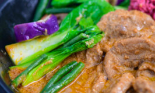
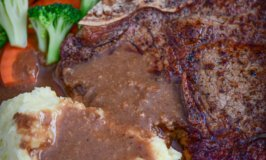
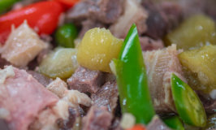

Lengua Kare Kare
Why deny yourself of a meaty, nutty stew filled with the most wondrous array of vegetables? Tons of Pinoys would probably stand by the fact that ...
Read onHow to Cook Steak on Stove with Mashed Potato and Gravy
The succulent, savory taste of steak is one that’s hard to beat. No matter where you’re from or how you like it, a piece of steak is always a surefire ...
Read onBeef Broccoli Recipe with Carrots
A Chinese takeout staple, beef broccoli is one of the quickest and best ways to get both protein and veggies in one bite. Crunchy, sweet broccoli ...
Read onPinapaitan sa Ampalaya
A fiesta of flavors sets Filipino cuisine heads and shoulders apart from the rest. Never one to shy away from the sweet, savory, or sour, it logically ...
Read on